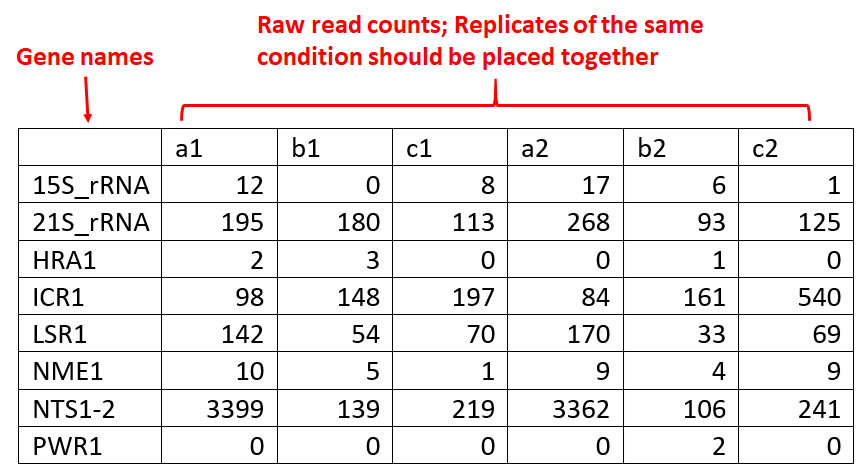
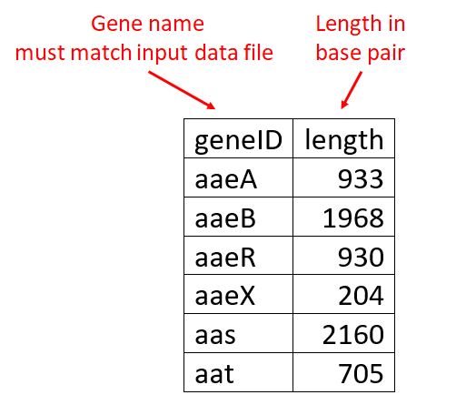
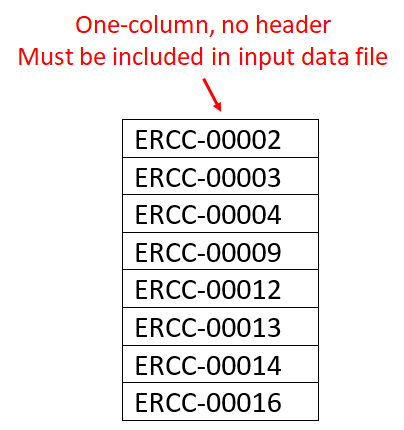
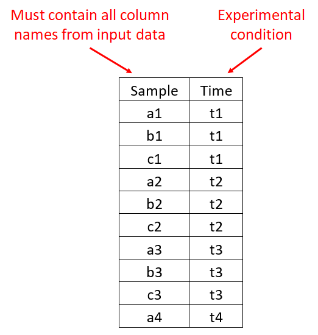
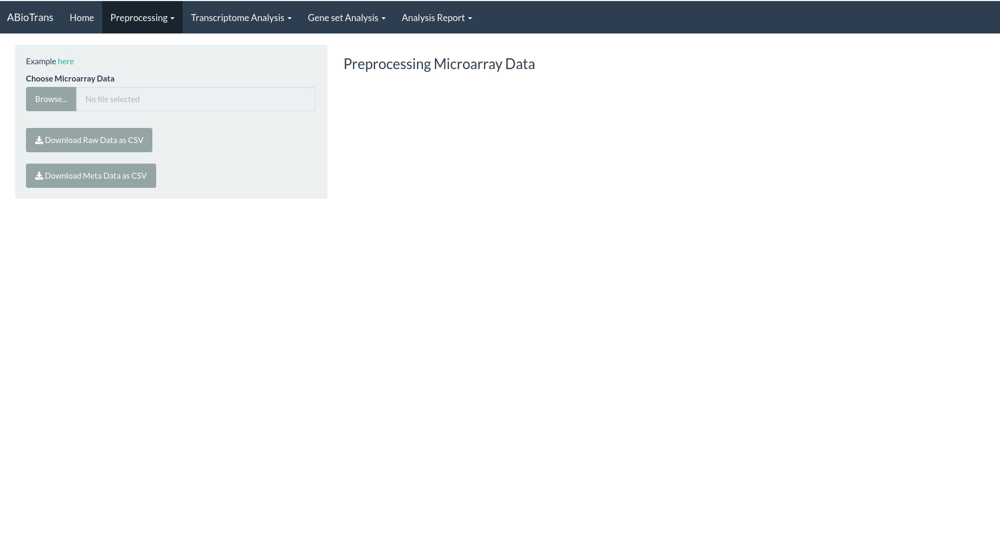

Import Data and Preprocessing
ABioTransPlus supports two types of common data formats for gene expression analysis: RNA-Seq count matrix and Microarray CEL files.
RNA-Seq gene expression matrix format
Import data
Choose an RNA-Seq data file in comma-separated value (.csv) format.
-
If you input raw data (read counts), please make sure that the first column contains gene names, and the read counts of each genotype (conditions: wildtype, mutants, replicates, etc.) are in the following columns. Each genotype column should have a column name.
-
Along with raw read counts, you can provide gene length (base pair) information in two-column .csv file, with the first column specifying gene names, which must match the gene names in raw data file, and the second column specifying gene length in base pair. Gene length file is required for normalization methods for sequencing depth and gene length: RPKM, FPKM, TPM
-
Alternatively, if you input a normalized data file, it should have gene names in rows and genotypes in columns, following the usual format of files deposited in the GEO database.
 
List of negative control genes (spike-in or stably expressed genes accross all samples), if available, should be contained in one-column .csv file. Negative control genes are required for Remove Unwated Variation (RUV) normalziation.

Finally, a metadata table matching column names of data file to experimental conditions should be given in two-column .csv format. Metadata table is required for differential expression analysis

Pre-processing
Preprocessing involves two steps: removing lowly expressed genes and normalizing the remaining gene expression.
- For removing lowly expressed genes, the user need to specify threshold expression values (which must be in same unit to the input data file - either raw read counts or normalized expression), and the minimum number of data columns that must exceed the threshold value.
- Normalization methods are available upon the availability of supporting data files: normalization for sequencing depth, including TPM and RPKM, requires gene length and normalization for sample variation, including RUV, requires negative control genes. User can download the filtered, normalized data in the
Datatab. Relative Log Expression (RLE) plots of raw and processed data are displayed to visualize the effects of normalization. Distribution of gene expression in each data column is visualized by violin plot.
![Figure 2: Preprocessing panel with RLE plots of raw data (upper figure) and filtered, RUV-normalized data (lower figure). Gene expression with minimum five counts in at least two columns are retained.]

Microarray Preprocessing (new feature)
Microarrays can be used in many types of experiments including genotyping, epigenetics, translation profiling and gene expression profiling
Raw Count data & Metadata can be extracted from the Microarray which can further be used to perform all the different analysis.
The user needs to zip all the CEL files along with the SDRF(Sample and Data Relationship Format) file ( e.g. E-MTAB-2967.sdrf.txt) & upload it.
Once the processing is complete, the user can download the output in csv format.
